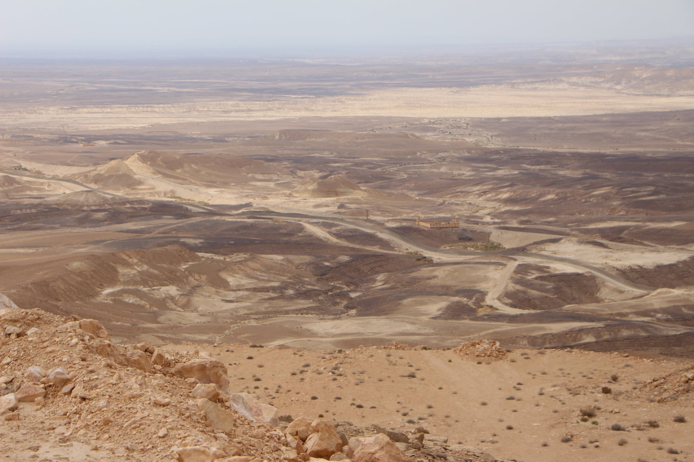
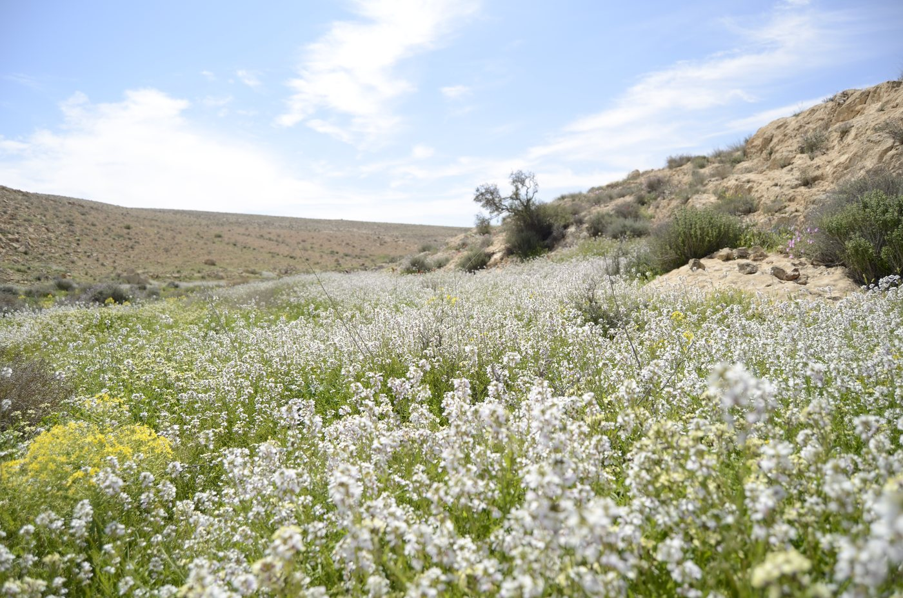
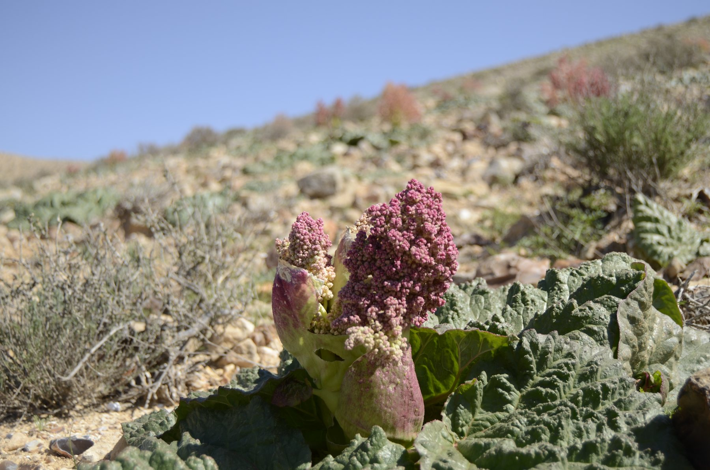
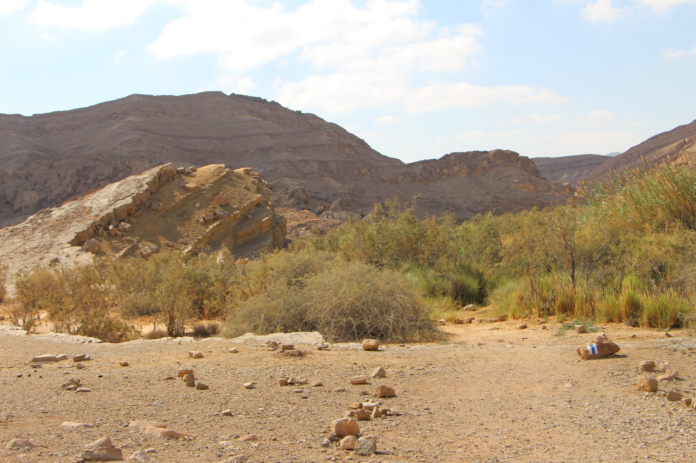
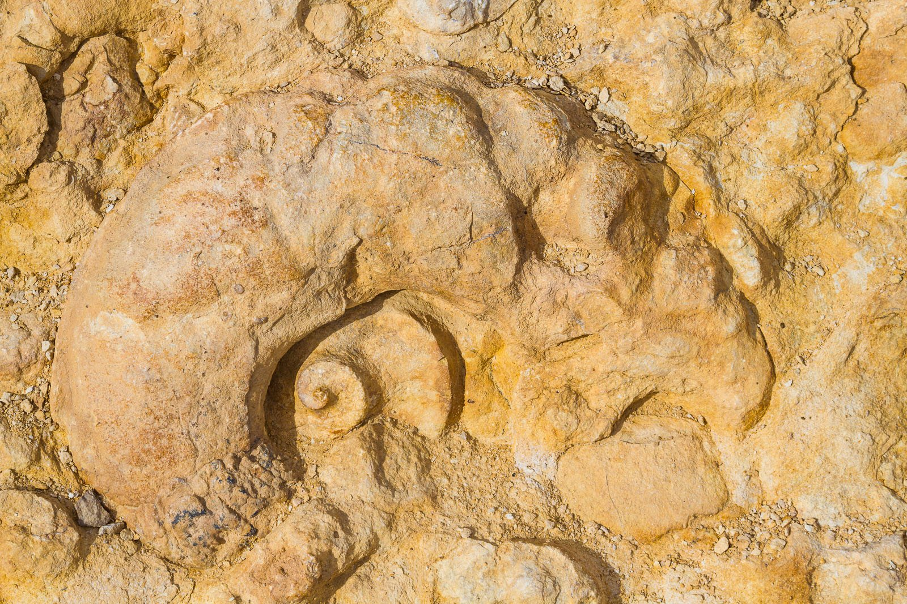
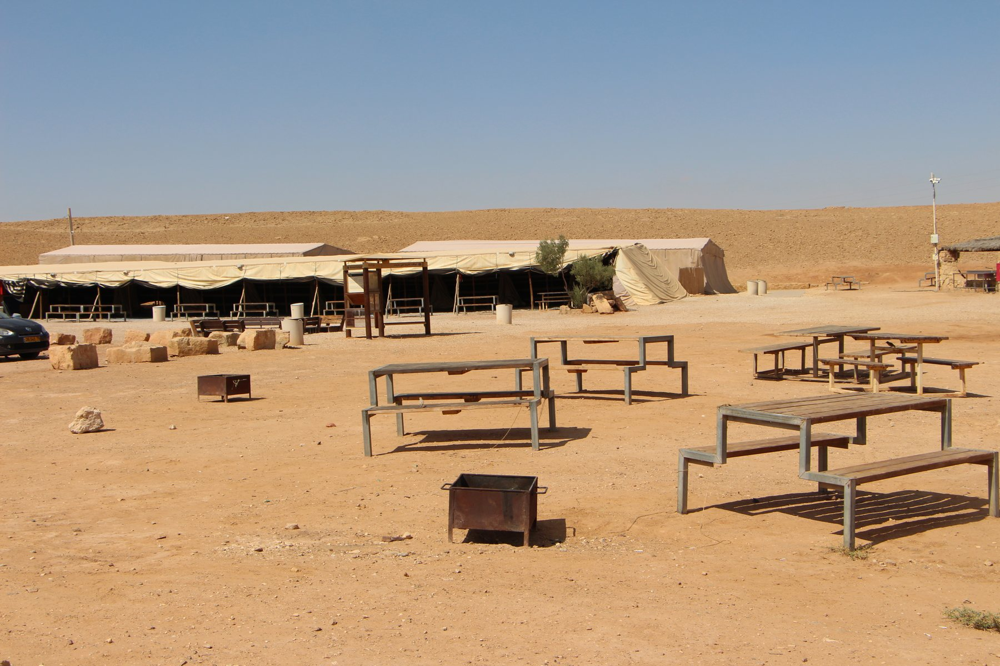
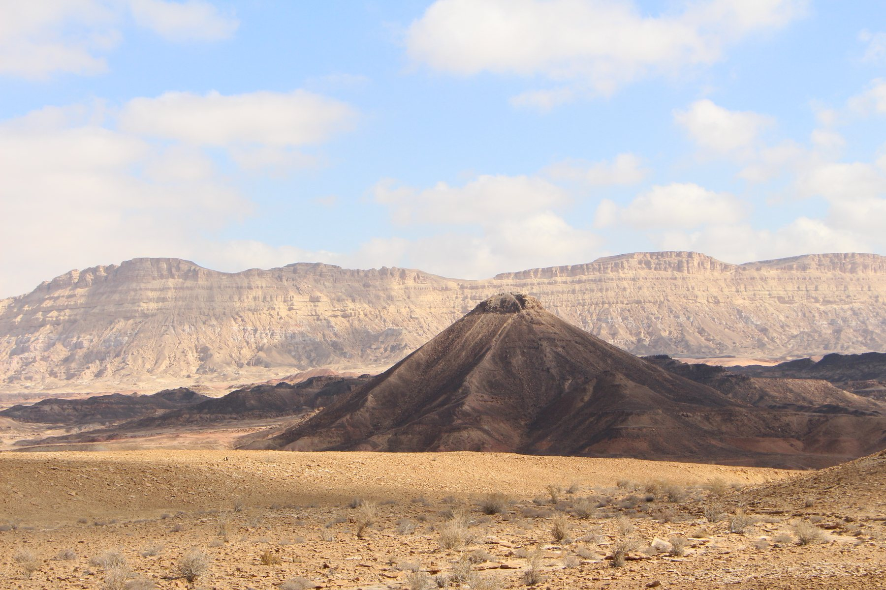
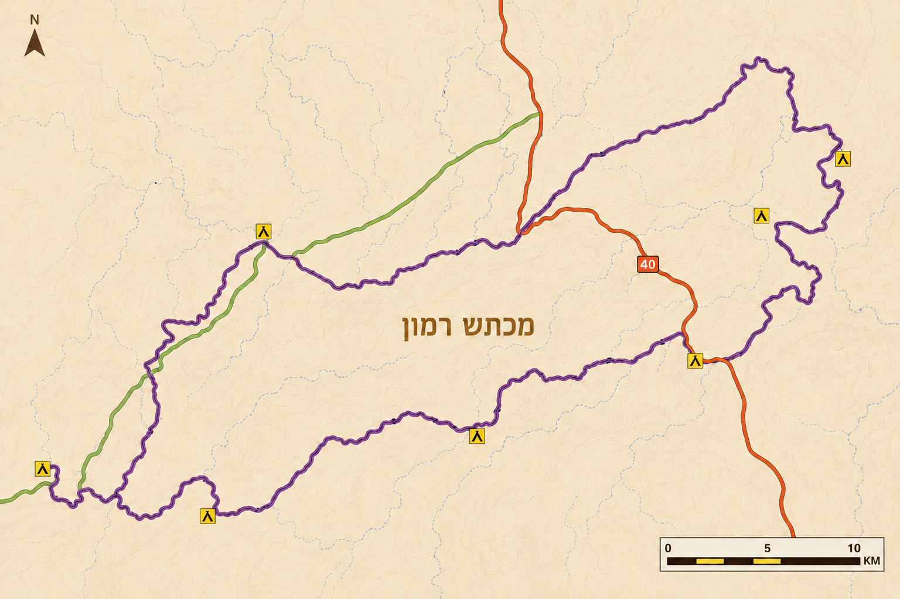

מקטעי סובב מכתש רמון







שביל סובב מכתש רמון הוא מסלול הליכה מעגלי באורך של כ־130 ק״מ המקיף את מכתש רמון ואת רכסי הר הנגב.
סובב רמון הוא שביל הליכה מעגלי באורך של כ־130 קילומטרים המקיף את מכתש רמון ואת רכסי ההרים שסביבו. השביל נחנך רשמית בשנת 2016, לאחר שנים של תכנון, סימון ופיתוח, במטרה לאפשר למטיילים הרבים שמגיעים לאזור, להכיר את מכתש רמון בצורה עמוקה ומגוונת יותר.
בניגוד למסלולים העוברים בתוך המכתש בלבד ולרוב בצידו המזרחי, סובב רמון חושף את המטיילים למגוון רחב של נופים ותופעות טבע. במהלך ההליכה עוברים על שפת המצוקים המקיפים את המכתש מכל קצותיו, מטפסים לפסגות הגבוהות של הר הנגב, יורדים אל ערוצי הנחלים שבפנים המכתש וחולפים לצד אתרים היסטוריים, בורות מים קדומים, שרידי דרך הבשמים הנבטית ותופעות גיאולוגיות ייחודיות שאין דומות להן במקומות אחרים בארץ.
אחד הדברים המיוחדים בסובב רמון הוא שהמכתש נראה אחרת כמעט בכל יום הליכה. לעיתים משקיפים עליו מלמעלה מקו המצוקים, לעיתים הולכים בלבו בין קירות סלע צבעוניים, ולעיתים הולכים מחוצה לו וחוצים את רכסי ההרים שמקיפים אותו. השינוי המתמיד בנוף יוצר תחושה של מסע ארוך ומגוון, למרות שכל המסלול מקיף למעשה את אותו אזור גיאוגרפי.
למרות שניתן ללכת את המסלול כולו ברצף במשך כשבוע עד עשרה ימים, לרוב המטיילים דווקא מתאים לחלק אותו למקטעים קצרים יותר של יומיים, שלושה או ארבעה ימים. חלוקה זו מאפשרת ליהנות מהאזורים המעניינים ביותר לאורך השביל גם למי שאין ברשותו זמן להשלמת הטרק השלם, וכך ניתן לפרוש אותו על פני חודשים ולחזור מידי סופ"ש או בחגים.
באתר זה חילקנו את סובב רמון למקטעים המבוססים על חניוני הלילה לאורך השביל. ניתן לצאת למסלול המלא, לבחור מספר ימים רצופים או לטייל בכל מקטע בנפרד. בנוסף, ניתן להיעזר בשירותי הטמנות מים, הקפצות מטיילים והקפצת ציוד, המאפשרים לתכנן את הטיול בצורה גמישה ונוחה יותר.







